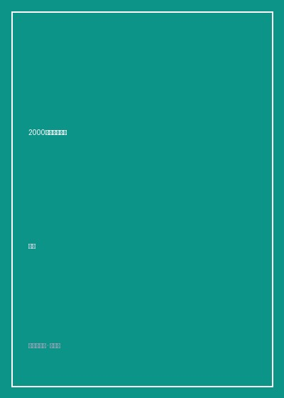

《2000年以来的西方》

总体观点
《2000年以来的西方》是中国思想界极其珍稀的'当代思想编年史'。刘擎教授以极度沉稳、客观而敏锐的笔触，摆脱了非黑即白的二元对立偏见，将全球顶尖学者（如哈贝马斯、齐泽克、福山、阿玛蒂亚·森、桑德尔等）在具体历史事件发生当下的第一线思辨完整呈现在中国读者面前。
全书清晰勾勒出西方现代文明从世纪之初的'历史终结论盲目狂喜'走向深刻内省与制度困境的演进轨迹。从新自由主义全球化的凯歌进军，到2008年次贷危机的制度反思，再到2016年英国脱欧与特朗普当选引爆的民粹主义海啸，证明了自由民主制面临的根本挑战并非来自外部敌人，而是其内部日益扩大的不平等与文化断裂。
刘擎以深沉的人文主义底色提醒我们：观察西方从来不是为了盲目膜拜或幸灾乐祸，而是为了借他山之石反思现代性给全人类带来的共同挑战。在普遍的不确定性时代，保持对话的意愿与开放的心智，是抵御部落主义仇恨唯一的理性防波堤。
核心观点
-
1. 历史并未终结：自由主义神话在世纪初的骤然受挫
福山曾预言西方自由民主制是人类制度进化的终点，但9·11恐袭与金融危机迅速粉碎了这一幻觉，多元现代性的竞争全面重启。
解构哈贝马斯与德里达在9·11后打破数十年学术龃龉联名发表声明，反思西方单边主义霸权对全球恐怖主义滋生的制度责任。 -
2. 民粹主义的深层地层：全球化遗民的尊严复仇
特朗普崛起与脱欧并非孤立的偶发闹剧，而是被跨国资本、高科技精英长期漠视的铁锈带蓝领工人和乡村阶层借助选票发动的反叛。
桑德尔在《精英的傲慢》中深刻剖析：文凭主义让成功者误以为自身高贵而穷人活该贫穷，彻底摧毁了底层劳动者的社会尊严。 -
3. 身份政治的割裂陷阱：部落主义对普遍公民权的瓦解
当代西方左翼过度聚焦于性别、族裔与微观身份标签的政治正确竞赛，丧失了凝聚跨阶层经济正义联盟的能力，导致社会陷入原子化内耗。
分析马克·里拉对美国自由派'身份政治走火入魔'的严厉批判：当每个人都退入自己的受害者小部落，公共民主对话便彻底瘫痪。 -
4. 算法利维坦的忧思：监控资本主义对人类自主性的篡夺
硅谷巨头通过采集全人类行为剩余数据建立预测模型，不仅在贩卖商品，更在暗中操纵公众情绪与选举投票，民主面临隐秘政变。
肖莎娜·祖博夫《监控资本主义时代》全面解构剑桥分析公司如何利用脸书数千万用户画像精准投喂假新闻扭转选战大局。 -
5. 在诸神之争中守住对话：走出二元对抗的第三条道路
面对日益激化的文明冲突与意识形态极化，真正的智者绝不站队于极端的任何一方，而是在理解对手合理性的基础上艰难守护公共理性。
刘擎总结二十年述评心法：'思想者的任务不是在战壕里开枪，而是在交火的阵地之间架设能够相互听懂语言的电线'。
全书结构
-
第一编 自由主义的黄昏与民粹风暴（2000-2007）
回顾新世纪初西方在9·11反恐战争、伊拉克泥潭与新自由主义经济狂飙中的自信与迷惘，梳理施特劳斯学派与新保守主义的思想交锋。
剖析阿玛蒂亚·森关于反恐战争中'单一身份暴力'的哲学警示，指出将复杂文明冲突简化为'善恶二元对立'的巨大危险。 -
第二编 全球秩序的震荡与金融海啸反思（2008-2015）
聚焦华尔街次贷危机引爆的资本主义制度危机，记录皮凯蒂《21世纪资本论》引发的全球不平等大辩论与阿拉伯之春的兴衰。
解构皮凯蒂用三百年欧美税收数据证明的资本收益率大于经济增长率公式（r > g），彻底粉碎涓滴经济学谎言。 -
第三编 民主的断裂与身份政治的极化（2016-2019）
全景复盘英国脱欧公投、特朗普执政与欧洲难民潮引发的政治大地震，深入剖析后真相时代（Post-truth）与民粹主义的深层根源。
详细记录福山发表《身份：尊严的需求与怨恨的政治》对其早年历史终结论的重大理论修正与反思历程。 -
第四编 技术奇点与人类未来的伦理忧思
探讨人工智能、基因编辑技术、元宇宙与脑机接口的飞速狂飙给人类主体性、劳动价值与生命伦理带来的颠覆性挑战。
针对贺建奎基因编辑婴儿事件与AlphaGo战胜李世石，梳理哈拉瑞与哈贝马斯对'超级人类'取代普通人类物种灾难的哲学警告。 -
代序与后记：在流动的时代里重新辨识思想坐标
刘擎教授深情自述二十年追踪西方公共思想的求索心路，寄语当代中国知识界以清醒、独立与世界主义情怀拥抱未来。
刘擎写下脍炙人口的名句：'在这个充满裂痕与不确定的世界上，清醒的理性不是为了让我们绝望，而是赋予我们行动的勇气'。